本期速览
02 MCP 新增异步任务与操作确认
11 Grok 团队用自动检查把关万次合并
12 Neuralink 获批脑机接口试验
14 Claude 机器验证黎曼猜想证明
15 微信 Windows 版禁止窗口截屏
16 T3 Code 用 MCP 委派子任务
01｜RSI 论文清单聚焦验证可靠性
来源（X） · @Xudong07452910 · 2026-11-25 08:25
今年 RSI 的论文非常多，让 AI 自己找问题、改自己、再验证的系统也越来越多。但难的是证明它确实变好了，而不是适应了测试集，或者被评分器骗了。这份清单里很多论文都在回答这个问题。
📚 论文清单
1. The Last AI Built by Humans: Toward Genuine Recursive Self-Improvement（综述）
按 AI 在改进循环里能掌控多少，把 RSI 分成五级。最低一级是人定目标、AI 只负责执行，最高一级是 AI 连改进流程本身都能改。用来判断各种 RSI 说法到底到了哪一级，很好用。
https://arxiv.org/abs/2609.11873
2. Meta-Harness: End-to-End Optimization of Model Harnesses
写 harness 这件事也交给 agent 来做。关键是让它看到以往每次尝试的代码、分数和完整 trace，这样它才知道之前为什么失败，能提出新设计，而不只是在上一版上小修小补。
https://arxiv.org/abs/2603.28052
代码 https://github.com/stanford-iris-lab/meta-harness
3. Exo: An Architecture for Self-Improving Systems at Runtime
agent 可以在干活的过程中改自己的工具、记忆和上下文处理。但运行记录、密钥、沙箱权限放在一个它改不了的保护层里，每次改动都留下人能读懂的 diff。
https://arxiv.org/abs/2611.00463
4. Hyperagents
把干活的 agent 和改它的 agent 合成一个程序，「怎么提出改进」的方法本身也能被改写。实验里，正是这类改动最容易迁移到新领域。
https://arxiv.org/abs/2603.19461
代码 https://github.com/facebookresearch/Hyperagents
5. Harness Evolution Hits a Ceiling: When Weight Training Should Begin
先把失败分成两类。卡住、死循环、步数用完这类「做不完」的问题，改 harness 能解决；做完了但答案差这类「做不好」的问题，得靠训练权重。
https://arxiv.org/abs/2610.11655
6. Harness-Delta Attribution: Dissecting Gains From Harness Evolution
把 harness 搜索带来的提升拆开看，有一大半是在适应测试集本身，还有一部分只是多花了算力。想知道是不是真的变强，要在同等算力下用新任务再测一遍。
https://arxiv.org/abs/2610.22466
7. The Winner's Curse in LLM Self-Improvement Loops: Selection Noise, Lock-in, and Acceptance Rules
每轮都挑分数最高的版本，但分数有噪声，挑中的往往只是运气好，评估集越小虚高越严重。所以要留一份只用来评估的数据。
https://arxiv.org/abs/2610.09239
8. Who Verifies the Verifier? Co-Evolving Inspectable Graders with Self-Improving Agents
开放任务没有标准答案，评分器设计错了，循环就会朝错的方向优化。更麻烦的是，坏评分器照样能让 agent 分数上涨，所以评分器要拿人工核对过的样例单独校准。
https://arxiv.org/abs/2610.11464
9. Reflections on Trusting Trust, Revisited: Contaminating Self-Modifying AI Coding Agents with Poisoned Benchmarks
自我修改的 agent 靠 benchmark 决定保留哪些改动，所以谁控制了 benchmark，谁就能悄悄影响它学成什么样。被带偏的行为在干净任务上也会保留，后续训练很难洗掉。
https://arxiv.org/abs/2609.17817
10 Bootstrapping Conversational Recommendation Agents At Spotify: Synthetic Data Generation and Self-Improvement Loops
产品上线前还没有真实对话，就先用合成对话来测试，再让 coding agent 提出修改。每轮都是人审 PR 加完整回归测试，最后用真实用户的 A/B 测试来验证。
https://arxiv.org/abs/2609.30297
11. No Second Run: Does RSI Stop at Frontier Pre-training?
前沿预训练成本高、没法重来，就把它拆成 agent 跑得起的小循环，比如修基础设施、调数据过滤、改爬虫，失败的想法也记进共享笔记。新组建的团队靠这套方法，三个月训出了 30B 的 MoE 基座。
https://arxiv.org/abs/2611.10719
代码 https://github.com/GAIR-NLP/801-30B
引用内容
elvis @omarsar0
中文译文
原文
02｜MCP 新增异步任务与操作确认
来源（X） · @dotey · 2026-11-25 10:49
简单解释一下这三个能力：
1. Skills over MCP
就是 Skills 现在可以和 MCP 一起发布了，虽然说以前可以分开发布，但版本管理是个大问题，你的 MCP 工具说明已经更新了，但是 Skills 还是旧的版本，就会导致很多问题，现在可以一起发布就避免了 Skills 和 MCP 版本不一致的问题。
2. Tasks
Tasks 就是把一部分耗时较长的任务变成异步后台执行，Agent 不需要等调用结果，可以先做其他事情，等任务完成后再继续。
3. Elicitation
Elicitation 则是在敏感操作之前有一个确认，比如说你要删除一个 GitHub Repo，不止是要手工点确认，还得要完整输入一遍 Repo 的名称，避免一不小 Agent 搞错了你直接点确认了。
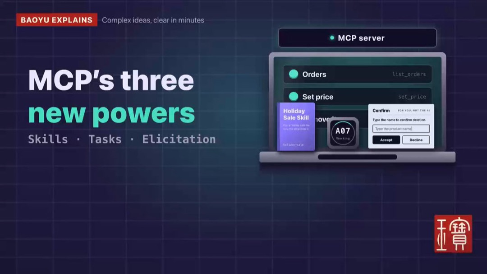

引用内容
ClaudeDevs @ClaudeDevs
中文译文
MCP 两岁了！最初作为一个将 AI 应用与工具和数据连接起来的协议，如今正在不断演进，以标准化智能体之间沟通和编排工作的方式。
我们正通过基于 MCP 的 Skills 和 Tasks 将更多此类智能体能力引入 Claude。
原文
MCP turns two! What started as a protocol for connecting AI apps to tools and data is evolving to standardize how agents communicate and orchestrate work.
We’re bringing more of these agentic capabilities to Claude with Skills over MCP and Tasks.
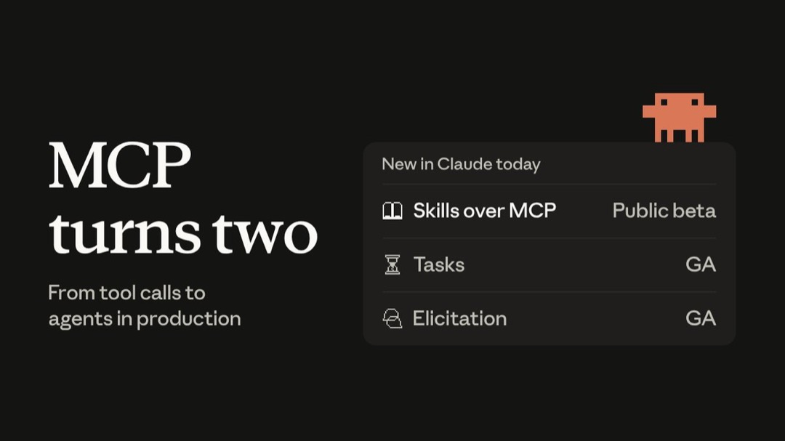
03｜Muse 借 iLink 协议接入微信
来源（X） · @yiyirats · 2026-11-26 07:34
同类 SDK 身上那些毛病，它大体都收拾利索了：你连着甩三条过去，它合成一轮，只回一条；码字那会儿，“正在输入”先亮起来；图片、文件、视频两头都收得下发得出；网弱断了，还能接着续。
白名单也是现成的：名单外头的人发来话，只落进待批的名册里，真想放行，得你在主聊天里亲手点个头。
https://github.com/gfydfhcf/wechat-ilink-muse-bridge
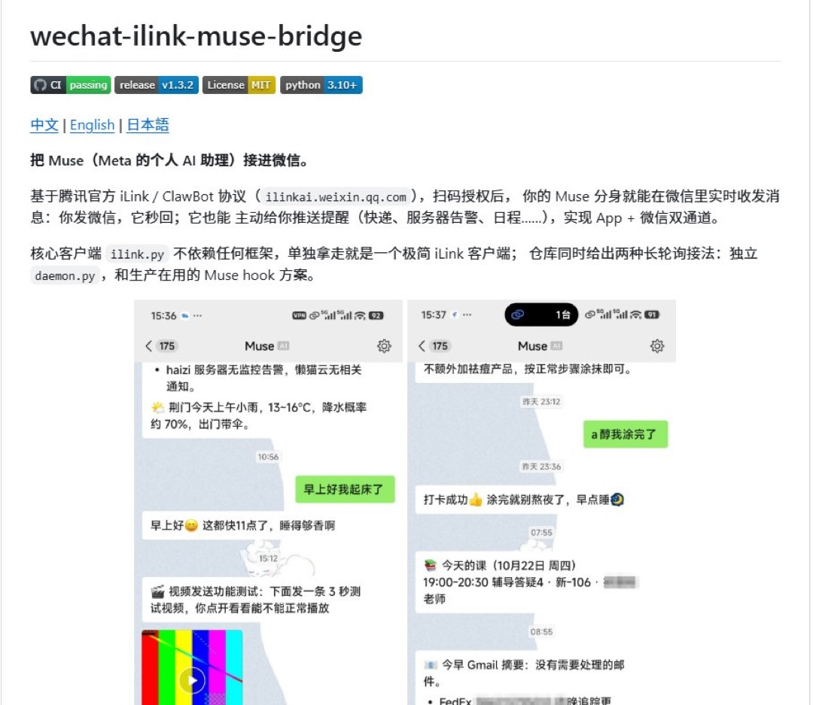
04｜Coralogix：一成公司占一半用量
来源（X） · @Coralogix · 2026-11-26 04:43
中文译文
Coralogix 刚刚发布了我们的 AI 使用基准报告：150 家公司、30,000 名工程师、今年合计 7,000 万美元的 AI 支出。
以 AI 驱动运营的公司与仅仅把 AI 当作自动补全工具的公司之间的差距令人震惊。
仅 10% 的公司就占了所有使用量的一半。
点击查看
原文
Coralogix just released our AI usage benchmark: 150 companies, 30,000 engineers, $70M in combined AI spend this year.
The gap between companies running on AI and those using it as autocomplete is staggering.
Just 10% of companies account for half of all usage.
Check it out here
05｜1Password 遭入侵密码库仍安全
来源（X） · @yanhua1010 · 2026-11-26 08:18
黑客偷了员工的 GitHub 账号，拿走部分源码和用户邮箱。
好在底线守住了：你的密码库、主密码、Secret Key 全部安全，不需要改密码。
唯一要注意的：近期假冒 1Password 的“账户恢复”钓鱼邮件和诈骗电话，别手快乱点链接。
https://1password.com/blog/update-on-nov-2026-security-incident
06｜Sierra 按结果定价获 300 亿估值
来源（X） · @FinanceYF5 · 2026-11-26 08:14
中文译文
按席位收费的软件刚刚面临了一个 300 亿美元的问题。
Sierra 刚刚以 300 亿美元估值完成融资，而六个月前其估值为 150 亿美元。它构建 AI 客户服务智能体，且不按席位收费。它按结果收费：一个问题得到解决、一笔贷款被发放、一笔理赔被支付、一位订阅用户被留住。它在大约两年半的时间里年收入突破了 4 亿美元。
有意思的转折是：联合创始人 Bret Taylor 曾担任 Salesforce 的联合 CEO，而 Salesforce 正是让按席位收费成为行业标准的公司。席位只动用软件预算，结果则动用工资单。Salesforce 的回应是同意以约 36 亿美元收购 Fin——另一家按结果定价的智能体公司。
问题在于：在 Fin，一个只是不再寻求帮助的客户会被算作"已解决"，并据此计费。目前，卖方掌握着记分卡的主动权。
来源：Sierra 博客（Series F）· TechCrunch · Salesforce 投资者公告 · Fin 帮助中心"Fin 定价：按结果" · Sequoia "Services: The New Software"。
旁白和动画由 AI 生成。
#AI #SaaS #Sierra #Salesforce #定价
原文
Per-seat software just got a $30 billion problem.
Sierra just raised at a $30B valuation, up from $15B six months ago. It builds AI customer service agents, and it doesn't charge per seat. It charges for outcomes: a problem resolved, a loan originated, a claim paid, a subscriber saved. It passed $400M in annual revenue in about two and a half years.
Here's the twist: co-founder Bret Taylor used to be co-CEO of Salesforce, the company that made per-seat software the standard. Seats only tap the software budget. Outcomes tap the payroll. Salesforce answered by agreeing to buy Fin, another outcome-priced agent, for about $3.6B.
The catch: at Fin, a customer who simply stops asking for help counts as "resolved," and it's billed. Right now, the seller keeps the scorecard.
Sources: Sierra blog (Series F) · TechCrunch · Salesforce investor release · Fin Help Center "Fin pricing: outcomes" · Sequoia "Services: The New Software".
Voiceover and animation are AI-generated.
#AI #SaaS #Sierra #Salesforce #pricing
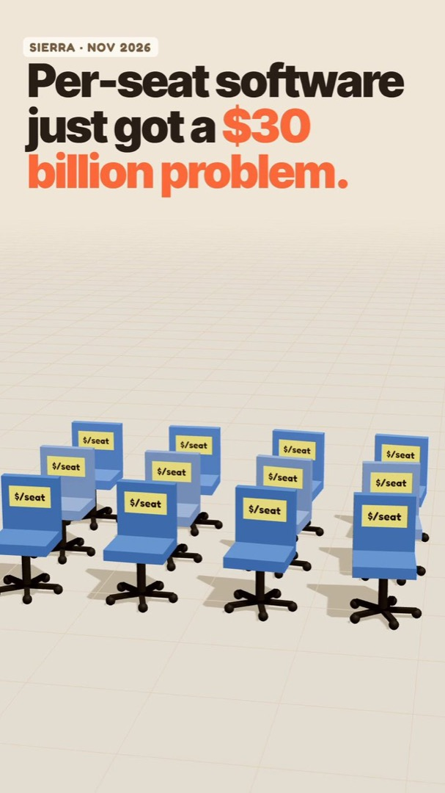
07｜大模型闭环设计 54 天零衰减蒸发器
来源（X） · @rickawsb · 2026-11-26 08:10
反正都是harness，人能做，我为什么不能做？！
引用内容
夜谈 @gntalktalk
他们构建了一套基于证据溯源的大语言模型闭环材料设计框架（Harness），在无需从头训练千亿级专用物理大模型的前提下，直接指导实验合成出连续户外运行 54 天零衰减的高性能太阳能界面蒸发器。
研究团队将商用大模型与文献解析知识图谱（Paper-Resolved KG）、文献训练机器学习模型（ML）以及真实湿实验反馈强行绑定。模型每提出一个材料设计假设，都必须锚定在具体文献的实验证据链上，再交由实验验证并将数据回传校准。
这套架构从根源上重塑了通用大模型的科研可靠性：在文献基准测试中，引入文献知识图谱后，专家评估的模型推理准确率直接从 60.5% 跃升至 81.7%；进一步叠加文献机器学习模型后，准确率更是飙升至 90.3%。
依托这套方法论，在完全相同的提示词下，经 KG 与 ML 增强的大模型精准提出了一种层状聚电解质三维锥体（layered-polyelectrolyte 3D cone）结构。经过实验微调后，该蒸发器通过扩大蒸发面积、捕获环境热量、破坏水分子氢键网络以及唐南共离子排斥（Donnan coion exclusion）效应，实现了 5.67 kg m⁻² h⁻¹ 的超高蒸发速率；更关键的是，在真实海水的户外连续测试中，该器件稳定运行 54 天 且性能无任何可测量的衰减，日产淡水高达 19.2 L m⁻² day⁻¹，脱盐率达到 99.99%。
这项研究揭示了“AI + 材料科学”范式转移的底层逻辑：只要基础大模型能力足够，过去设计一款顶级功能材料，高度依赖科学家多年积累的实验手感与隐性记忆，而现在可以通过一个模型的harness实现。
这一突破有能快速商业化的巨大的应用价值：
由于该器件完全不需要电网和高压水泵，将实现海水淡化的小型化甚至便携化，这面对的是之前完全未开发的离网甚至消费级数十亿甚至百亿美元的市场。
而论文中的框架验证了 AI 对多尺度界面传热、传质及分子网络调控的精准设计能力，可直接迁移至光热转换器件、柔性电子散热膜及特种分离膜等高端制造环节。其泛化使用将可能进一步带来多个十亿百亿甚至千亿美元级别的应用领域的突破
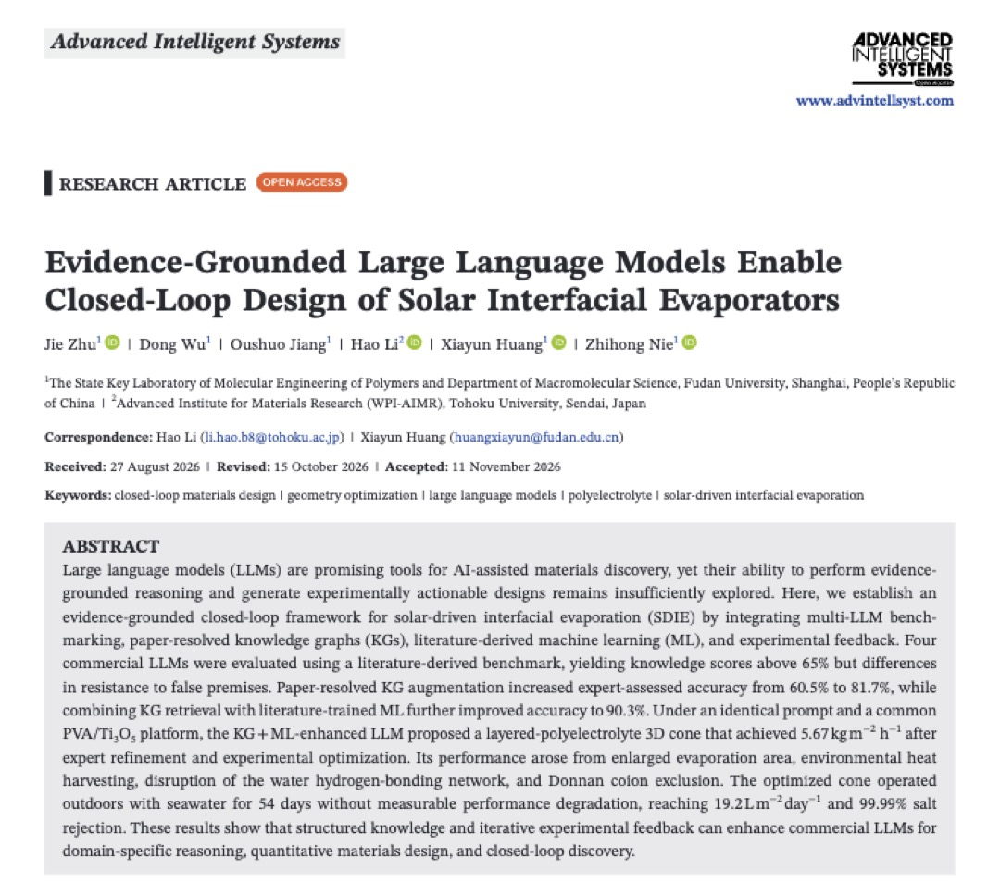
08｜Grok Bot 支持 Slack 委派
来源（X） · @0xlangeai · 2026-11-26 08:07
SpaceX SI 做 Grok Bot、以前在 Cursor 的 eric zakariasson 说，11 月 24 日这版是 25 项新能力、34 项改进、43 项修复。
几个重点：
1. Slack 更聪明了：Bot 把活交给另一个 Bot，结果会回到你的私信，还带 Connect 按钮；群私信里叫名字就能叫醒它，一对一也可以不开线程、直接在主聊天回。
2. 缺货商品卡片能点 Notify me 等补货，手机上单品卡片还能直接 Buy now。
3. 一条消息里要是堆了 3 条以上 X 草稿，会横着排成轮播，能看到 Posted、Replied 或 Sent。邮件草稿也能加密送了。
工作或学校的微软账号登录会自动接上 Teams，组织还能把连接器限制在自己的域名里。接上 Ashby，就能问候选人、面试、职位和 offer。
你们已经刷到这版了吗？有在用 Slack 或要一头发好几条草稿的，可以先更新看看。
https://x.com/ericzakariasson/status/2125675144173556124
引用内容
eric zakariasson @ericzakariasson
中文译文
grok @bot 1.3.0 正在推出！
更聪明的 Slack 机器人、补货提醒和移动端立即购买、带组织管控的自动 Teams 设置、一个横向 x 草稿轮播、ashby 连接器，以及邮件草稿的密送功能
还有更多令人兴奋的功能即将上线！
https://x.ai/changelog/bot
原文
grok @bot 1.3.0 is rolling out!
smarter slack bots, restock alerts and mobile buy now, automatic teams setup with org controls, a sideways x drafts carousel, the ashby connector, and bcc on email drafts
and a lot more exciting things shipping soon!
https://x.ai/changelog/bot
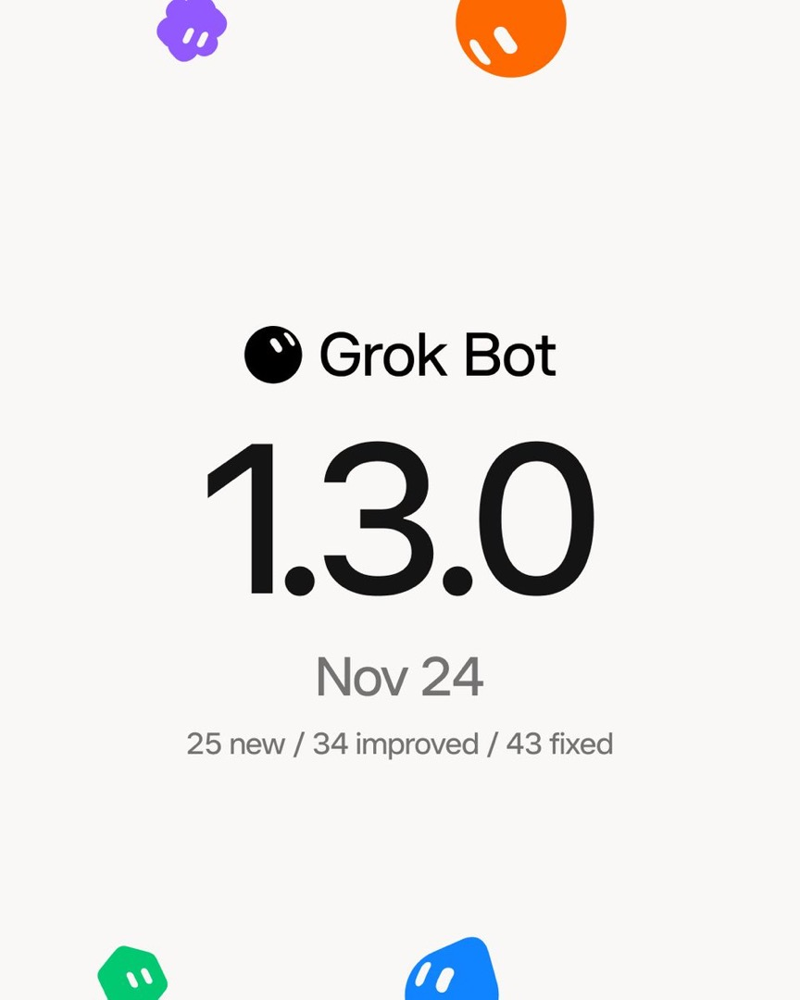
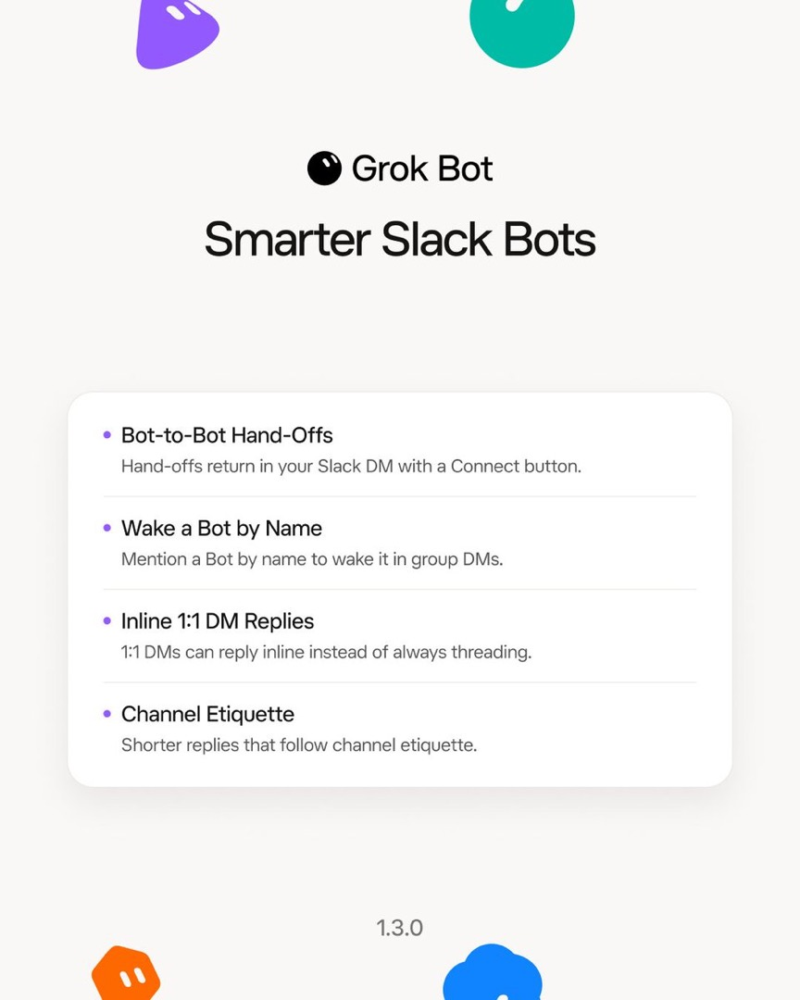
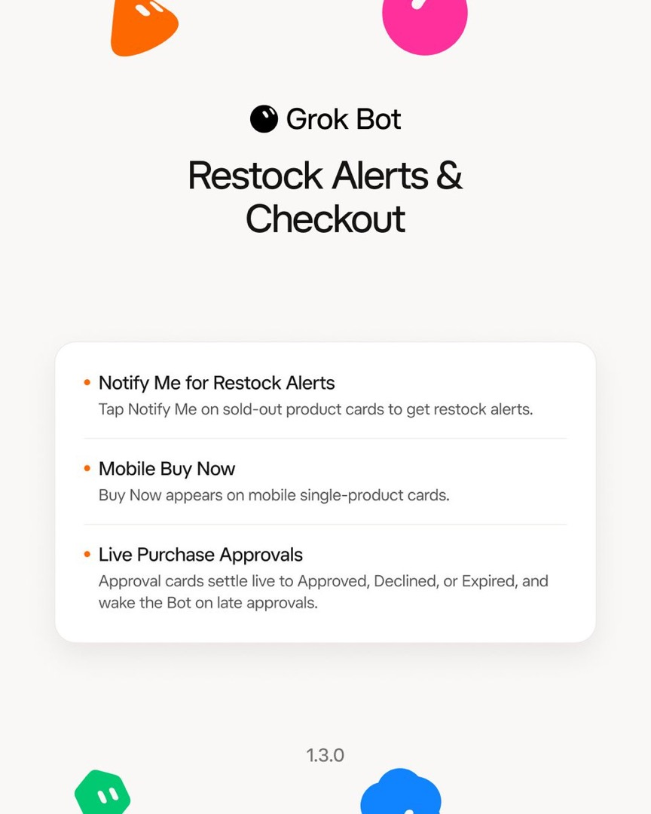
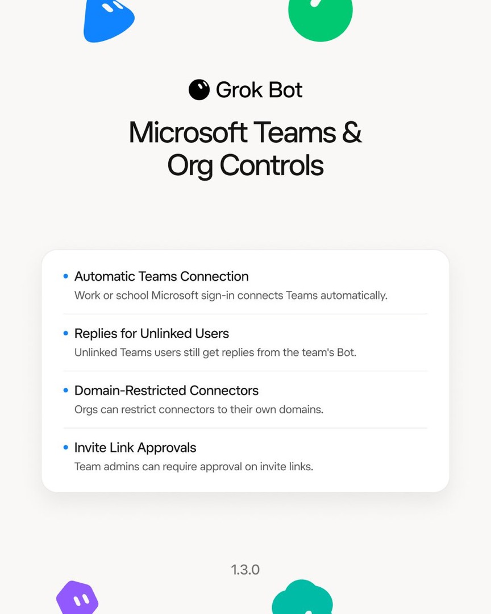
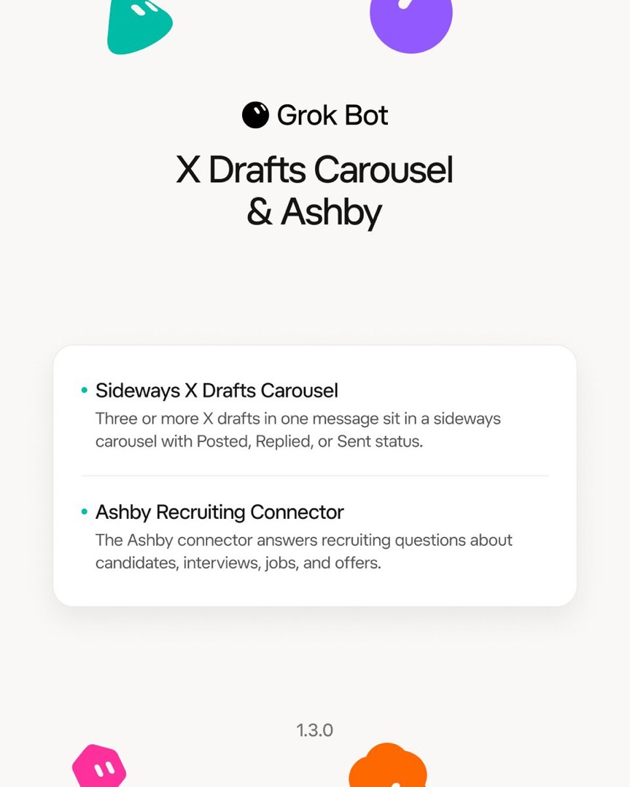
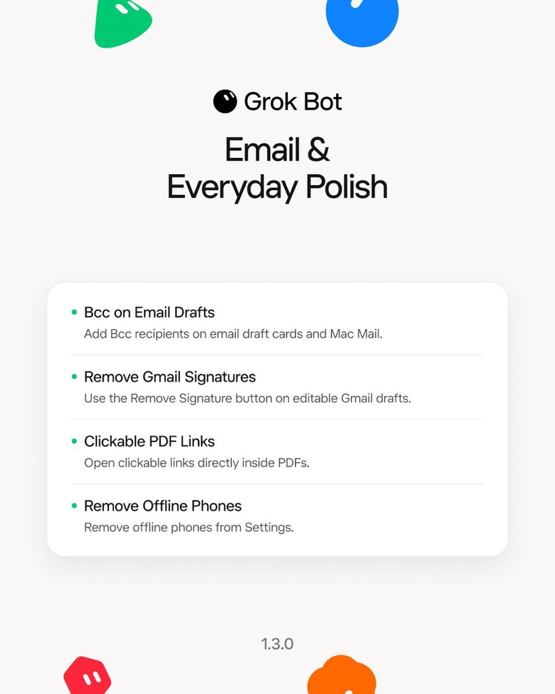
09｜vphone-cli 虚拟化 iPhone
来源（X） · @KitPloit · 2026-11-26 08:00
中文译文
vphone-cli v2.18.0 — 在 Apple Silicon 上启动和管理虚拟 iPhone，支持固件修补、越狱变体以及用于 iOS 测试和分析的安全研究功能。https://ktp.sh/T8muTqbw2r
原文
vphone-cli v2.18.0 — Boot and manage virtual iPhones on Apple Silicon with firmware patching, jailbreak variants, and security research features for iOS testing and analysis. https://ktp.sh/T8muTqbw2r

10｜Glossplay 双语字幕播放器学外语
来源（X） · @GitHub_Daily · 2026-11-26 08:00
Glossplay 是一个给学外语的人做的开源视频播放器，原文字幕在上、译文在下，翻译会比播放提前一点，台词一出来译文已经在那了。
没有字幕的视频也能看，它会用 Whisper 在本地把语音转成字幕，在较新的 NVIDIA 显卡上，一小时的视频几分钟就能转完。
GitHub：https://github.com/Magerko/glossplay
点一下字幕里的单词，视频自动暂停并给出释义，接上大模型的话，还会解释这个词放在这句台词里是什么意思。
生词连同整句台词一起存下来，一键发到 Anki 做成卡片，卡片里带着截图和这一句的原声。
翻译默认走谷歌翻译，不用配置就能用，也可以接本地模型，字幕内容不出电脑。
可选的语言有 20 种，中文、日语都在里面。逐句自动暂停、单句重复这两个功能，我觉得拿来练听力挺合适。
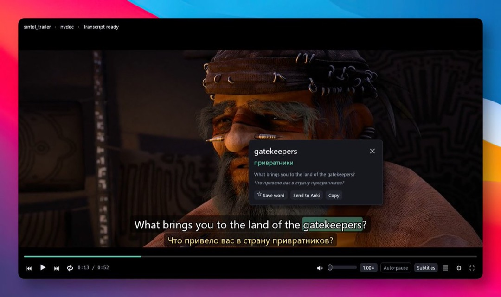
11｜Grok 团队用自动检查把关万次合并
来源（X） · @FinanceYF5 · 2026-11-26 07:49
中文译文
一个团队在一个月内完成了 11,000 次代码变更。人类几乎没怎么读它们。
上个月，xAI 的 Grok Bot 团队合并了大约 11,000 次代码变更。智能体像真实用户一样测试每个版本，然后自己找到 bug、修复并合并。只有大约 0.5% 被回滚。
秘诀不在于更快的智能体。工程师 Lauren Tan 表示，团队花了大约六个月时间，把每一次修正都转化为自动检查。Anthropic 的 Bun 也做了同样的事：在 11 天内将 535,000 行代码从 Zig 重写为 Rust，进行了超过一百万次测试检查，零跳过。
软件工厂：机器编写代码，工程师搭建检查体系。
来源：Lauren Tan，AI Engineer CODE 2026（2026 年 11 月 11 日），公司自述数据 · Jarred Sumner，"Rewriting Bun in Rust"，http://bun.com（2026 年 7 月 8 日）。
旁白和动画由 AI 生成。
#AI #软件工程 #Claude #Grok #Bun
原文
One team shipped 11,000 code changes in a month. Humans barely read them.
Last month, the Grok Bot team at xAI merged about 11,000 code changes. Agents test each release like real users, then find bugs, fix them and merge on their own. Only about 0.5% were rolled back.
The trick wasn't faster agents. Engineer Lauren Tan says the team spent about six months turning every correction into an automatic check. Anthropic's Bun did the same: 535,000 lines rewritten from Zig to Rust in 11 days, with over a million test checks and zero skipped.
The software factory: machines make the code, engineers build the checks.
Sources: Lauren Tan, AI Engineer CODE 2026 (Nov 11, 2026), company-reported · Jarred Sumner, "Rewriting Bun in Rust", http://bun.com (Jul 8, 2026).
Voiceover and animation are AI-generated.
#AI #SoftwareEngineering #Claude #Grok #Bun
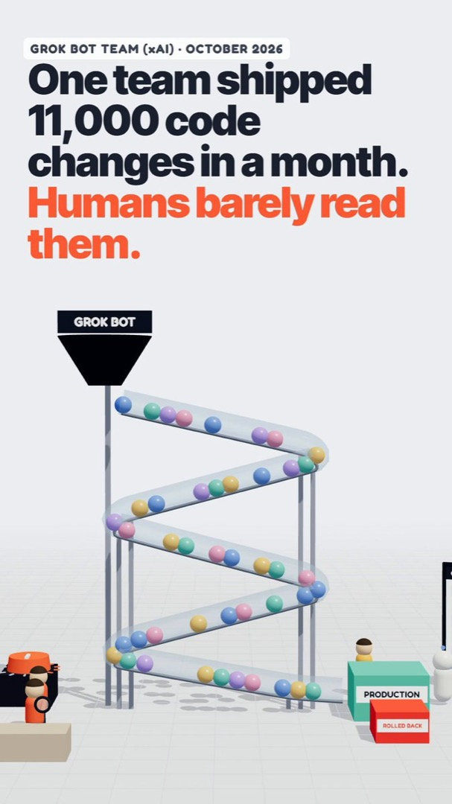
12｜Neuralink 获批脑机接口试验
来源（X） · @Gorden_Sun · 2026-11-26 07:44
赛博人类即将来临。
引用内容
Neuralink @neuralink
中文译文
我们已获得 FDA 批准，将推出 LINK——美国首个植入式脑机接口的关键性试验。这项试验建立在我们迄今与 Neuralink 合作、服务 30 多名参与者的工作基础之上。
渐冻症（ALS）患者可能符合参与条件。了解更多：
https://neuralink.com/trials/device-control/
原文
We’ve received FDA approval to launch LINK, the first pivotal trial for an implantable brain-computer interface in the US. This builds off of our work with 30+ participants with Neuralink to date.
Those with ALS may be eligible. To learn more:
https://neuralink.com/trials/device-control/
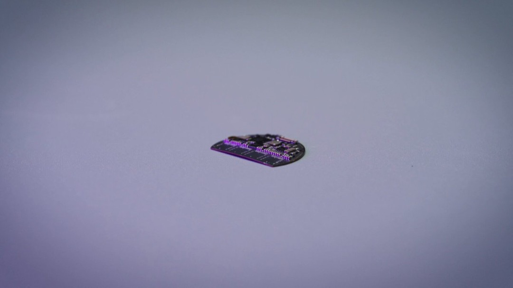
13｜Antigravity 免补丁多语言界面
来源（X） · @QingQ77 · 2026-11-26 07:41
https://github.com/CHANPAJN/antigravity-langpack
antigravity-langpack 是面向 Google Antigravity 的零二进制、免修改 app.asar 的多语言界面扩展包.
支持 macOS、Windows 和 Linux。项目内置 13 种语言、14 套本地化词典（每套 1,920 条词条），在「Settings → Appearance」中挂载原生 Display Language 下拉菜单，无需重启窗口即可实时切换界面语言。
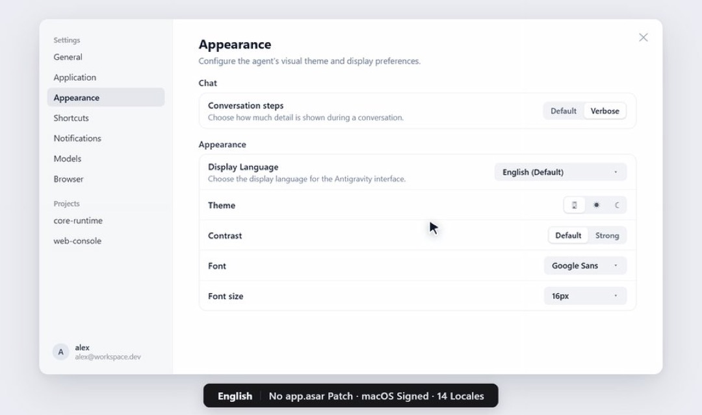
14｜Claude 机器验证黎曼猜想证明
来源（X） · @FinanceYF5 · 2026-11-26 07:29
中文译文
AI 刚刚证明了黎曼猜想。没有人类阅读过这份证明。
11 月 20 日，Anthropic 数学家 Levent Alpöge 发布了用 Claude 构建的黎曼猜想证明：1700 万行 Lean 代码。没有人类读完全部内容。Lean FRO 和 Mathlib Initiative 在第二天就认证了它，因为机器检查了每一个步骤。
这就是可验证工作的未来方向：AI 完成工作，机器进行检查，一个人签署确认。Anthropic 已经以这种方式发布自己的代码：每天 30,000+ 次变更，大部分阅读由机器完成，每一次变更都有一个人负责。
尚未被 Clay Institute 列为已解决；一位数学家对此提出异议。
来源：Lean FRO + Mathlib 联合声明（2026 年 11 月 21 日）· Scientific American · Science News · Forbes · http://claude.dev "How the Claude Code team does code review"（2026 年 10 月 15 日）· Anthropic S-1/A。
旁白和动画由 AI 生成。
#AI #Claude #Anthropic #黎曼猜想 #数学
原文
AI just proved the Riemann Hypothesis. No human has read the proof.
On Nov 20, Anthropic mathematician Levent Alpöge released a proof of the Riemann Hypothesis, built with Claude: 17 million lines of Lean code. No human has read it all. The Lean FRO and Mathlib Initiative certified it the next day, because machines checked every step.
That's where checkable work is heading: AI does the work, machines check it, a person signs off. Anthropic already ships its own code this way: 30,000+ changes a day, most of the reading done by machines, and a person on the hook for every change.
Not yet listed as solved by the Clay Institute; one mathematician disputes it.
Sources: Lean FRO + Mathlib joint statement (Nov 21, 2026) · Scientific American · Science News · Forbes · http://claude.dev "How the Claude Code team does code review" (Oct 15, 2026) · Anthropic S-1/A.
Voiceover and animation are AI-generated.
#AI #Claude #Anthropic #RiemannHypothesis #Math
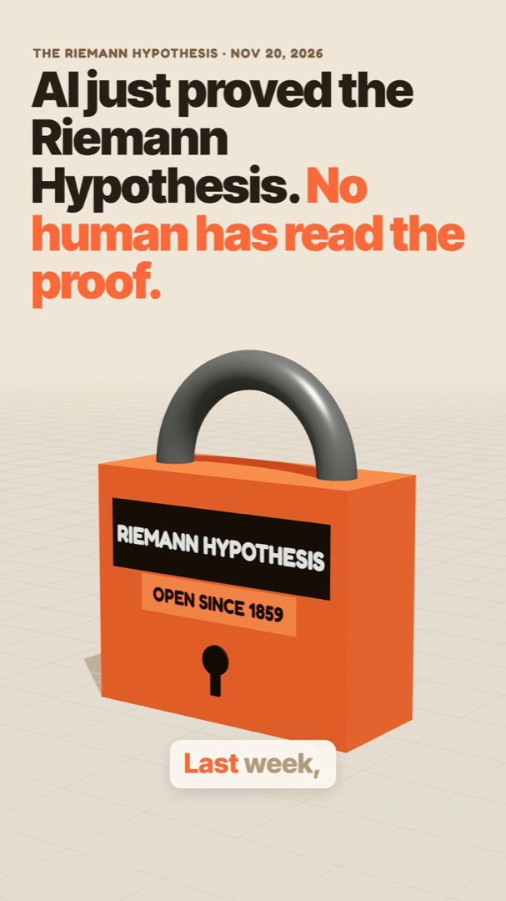
15｜微信 Windows 版禁止窗口截屏
来源（X） · @xulijian1994 · 2026-11-25 22:51
Windows 微信 4.2.0.53 被发现主动调用了 Windows 的 SetWindowDisplayAffinity API，并将主窗口和独立聊天窗口的属性设置为 0x11（WDA_EXCLUDEFROMCAPTURE）
这个参数会直接将指定窗口从系统截图和录屏管线中剔除，导致 Windows 自带截图、QQ 截图都无法捕获微信窗口，而微信自己的截图功能却可以正常使用
进一步扫描 Weixin.dll 的导入表，也发现了这个 API，排查者甚至在关闭相关隐私保护设置后，依然无法正常截图
目前很多 Computer Use Agent 都是通过截图获取界面信息，再由多模态模型识别界面元素，控制鼠标和键盘完成操作，这一机制相当于直接把 AI 的眼睛蒙上了
一边是腾讯的 WorkBuddy 在推进桌面自动化，一边是腾讯的微信在限制第三方捕获窗口
这其实暴露了一个很有意思的商业冲突，AI Agent 需要打破应用之间的壁垒才能创造价值，而传统互联网业务恰恰依靠这些壁垒来维持自己的商业价值
现在这两种利益诉求，甚至出现在了同一家公司内部，腾讯准备让谁给谁让路？
16｜T3 Code 用 MCP 委派子任务
来源（X） · @madawei2699 · 2026-11-26 07:23
引用内容
meow @meow2149
同时拉起多个 Coding Agent 并不难，难的是让它们顺畅地委派任务、互相通信、交接上下文，并在出错后可靠恢复。
Codex、Claude Code、Pi、OpenCode 各自都有独立的会话、上下文和工具体系。最近拆解了 T3 Code 和 Orca 的源码，发现它们都是在这些工具之上架了一层 Agent Orchestration Layer（Agent 编排层），把原本单打独斗的 Agent 组织成一套协作系统。
目标一致，但两者的底层设计走了两条很有意思的路线。
1. 先分清两个核心角色：协调者与编排器
多 Agent 协作系统通常可以拆成两层：
- Coordinator（协调者）：本身往往也是 Agent，负责理解需求、拆解任务、指派执行者和验收结果。
- Orchestrator（编排器）：底层运行时，负责拉起 Agent、投递消息、维护状态、管理依赖和失败重试。
比如让 Claude Code 做架构设计，Codex 写实现，Pi 跑测试和审查。协调者决定怎么分工，编排器负责把这些决策稳稳落地。
2. T3 Code：MCP 委派 + 事件驱动
T3 Code 的思路偏向统一运行协议与状态管理，核心落在三个设计上：
任务委派：把协作包装成标准工具调用。它通过 Orchestrator MCP Server 暴露 delegate_task 工具，Claude Code 需要把子任务交给 Codex 时，直接调用工具指定目标 Agent、任务描述、角色、工作区隔离方式和执行模式即可。T3 Code 随即创建子线程，由 Provider Adapter 启动目标 Agent，并挂载到父线程的执行树下。整个过程支持异步，父 Agent 可以继续处理其他工作，也能主动等待结果。
状态与恢复：Orchestrator V2 采用事件驱动架构。任务委派、工具调用、执行结果和工作区检查点全部记录为事件，再配合数据库事务、Outbox 和状态投影，将状态持久化与外部执行解耦。客户端通过 WebSocket RPC 订阅状态变化，断线重连后也能无缝恢复进度。
上下文交接（Context Handoff）：T3 Code 把应用层会话 AppThread 和底层原生会话 ProviderThread 分开管理。假设前几轮由 Codex 完成，中途切到 Claude Code，之后又切回 Codex，系统可以直接恢复原有的 Codex 原生会话，只增量补充它漏掉的那段对话历史，避免每次切换都重传全量内容（当然，不同 Agent 内部的推理状态和 KV Cache 仍无法共享）。
3. Orca：CLI 协议 + 收件箱通信
相比之下，Orca 的重心放在任务调度与 Agent 间通信上：
调度方式：通过 orchestration Skill 教会 Agent 使用一套 CLI 协议，涵盖创建任务、启动 Worker、发消息、查状态和汇报结果。比如启动 Codex 执行一个已登记的任务，只需运行：
orca orchestration worker-start --task "$TASK_ID" --worktree current --agent codex
这条命令交由 Orca Runtime 处理，Agent 本身无需关心其他 Agent 的启动细节。
跨 Agent 通信：内置一套 Mailbox（收件箱）机制。执行中卡住用 ask 向协调者提问，协调者用 reply 回复，做完后 Worker 发 worker_done 汇报结果。这些结构化消息持久化到 SQLite，由 Runtime 负责投递并唤醒接收方。
任务模型与防冲突：Orca 把一次协作拆成四个核心实体：Run（完整协作过程）、Task（具体任务及依赖）、Dispatch（一次实际派工）和 Worker（执行任务的 Agent）。把 Task 和 Dispatch 分开建模非常实用：如果某个 Agent 执行超时、协调者把任务重派给了新 Worker，哪怕旧 Agent 事后突然返回完成信号，系统也能靠 Dispatch ID 识别出过期回报，防止误改当前任务状态。
依赖编排：支持 DAG（有向无环图）任务依赖。前置任务全部完成后，Runtime 自动把下游任务标为 ready，交由协调者挑选合适的 Worker 接手。
4. 两条路线的差异与趋同
对比下来，两者的发力点很清晰：
- T3 Code 侧重统一 Agent 运行协议、会话管理、上下文交接和事件流。
- Orca 侧重任务依赖、派工隔离、结构化通信和 Worker 生命周期。
不过两者的能力也在互相靠拢。T3 Code 已有实验性的 TypeScript Workflow，Orca 也补上了跨 Agent 会话交接；两者也都通过 Git Worktree 隔离并行任务，减少多个 Agent 同时改代码带来的冲突。
5. 越来越像面向 Agent 的操作系统
套用操作系统的视角，这套编排架构的每一层几乎都能一一对应：
- Coding Agent → 进程
- Orchestrator → 进程调度器
- Mailbox → 进程间通信（IPC）
- Context Handoff → 会话上下文迁移
- Event Store → 状态持久化与恢复
- Git Worktree → 工作空间隔离
- Task DAG → 任务依赖管理
多 Agent 编排真正有门槛的从来不是并发数量，而是底层的分工、通信、等待、交接与容错，最终把分散的结果拼成一个可交付的项目。随着这些基础设施逐渐补齐，Coding Agent 管理工具也越来越像一套专门面向 Agent 的操作系统。

17｜MACE4IRmol 低成本预测红外光谱
来源（X） · @rickawsb · 2026-11-26 07:20
这还是基于25年的模型能力获得的成果
材料学马上也要被攻破了。。。
但这样一篇行业顶会级别的研究，放在每天解决一个千禧问题的现在，显然是没人会注意的😂
引用内容
夜谈 @gntalktalk
重点是，它并没有在底层物理方程或神经网络架构上做什么惊天动地的颠覆，核心突破只是给模型加上了一套不确定性量化（Uncertainty Quantification）的集成机制。
与传统计算化学依赖密度泛函理论（DFT）进行“死磕算力”的从头算，或者早期机器学习原子间势（MLIP）只管盲目输出预测值不同，研究团队面对化学空间中海量的未知分子结构，不再让 AI 强行“硬猜”结果，而是让多个独立训练的子模型（包括显式包含与不包含范德华色散校正的模型）形成集成评估。在输出红外光谱的同时，模型会实时标定自身的认知边界，直接把“没把握、容易出错”的预测盲区筛出来。
这种思路让其在保持经典机器学习力场（O(N) 线性复杂度）低算力成本的前提下，在训练覆盖域内跑出了紧贴高精度 DFT 泛函（如杂化泛函级别）的物理精度；
更重要的是，由于计算速度快了几个数量级，它能够直接驱动路径积分分子动力学（PIMD）进行长程采样，把过去静态 DFT 算不动、只能靠经验缩放因子凑数的动态非谐性与核量子效应（NQE）全量纳入模拟，在动态光谱形状与氢键频移还原度上反而反超了常规静态 DFT。
依托这套方法论，MACE4IRmol 直接打通了有机化合物、无机化合物和金属配合物的壁垒，把过去依赖经验归属、一条条孤立测定的红外指纹，重构成了一个在连续高维势能面与偶极矩流形上可计算、可外推的代数空间。在模拟精度与物理完备性上，模型不仅能以极低算力还原高精度 DFT 级别的能量、力场与偶极矩，还能把过去计算极其昂贵的核量子效应直接纳入日常光谱模拟；更重要的是，通过对比带色散校正与不带色散校正的子模型，研究者可以直接在复杂体系中剥离并量化范德华力对振动光谱的真实贡献。
放到更宏大的科学版图来看，这种“通用基础 MLIP + 物理属性同步预测 + 不确定性量化（UQ）”的范式，可能正在成为整个计算物理与材料科学的新一代标准底层基础设施。它并不会完全取代底层第一性原理计算——面对强关联电子体系（上限受制于训练数据泛函）、光化学激发态（非绝热跃迁）或超长程静电界面时，仍需超算运行高精度量子化学方法提供“真值标签”；
但它成功充当了量子力学与宏观尺度之间的“智能代理层（Surrogate Layer）”，与主动学习闭环结合，让科研人员能以近似经典力场的算力跑出接近第一性原理精度的百万原子级模拟。
一旦这种能力从学术论文走向工业界，其商业传导路径清晰且极具爆发力：
制药与生物技术： 分子中复杂的氢键网络高度依赖核量子效应（NQE）精准刻画，该模型可实现药物多晶型（Polymorphs）的高通量虚拟筛查与未知光谱自动归属，并用 UQ 护栏过滤掉新官能团预测假阳性，大幅压缩临床前固态研发周期。
新能源电池与储能： 锂/钠电池电极-电解液界面（SEI/CEI 膜）与溶剂化壳层的动态演化极难用静态 DFT 捕捉，该引擎可直接充当产线与实验室原位（In-situ）红外光谱的“理论解码器”，精准定位副反应产物并加速新型电解液配方寻优。
半导体与电子化学品： 凭借打通约 80 种元素与金属配合物的能力，它能直接模拟原子层沉积（ALD/CVD）金属前驱体的热分解指纹，为晶圆厂在线 FTIR 工艺监控提供实时杂质反推能力。
化工催化、碳捕集（DAC）与科学仪器： 既能通过色散校正对比剥离表面弱吸附中间体、加速低温室效应（GWP）环保材料筛选，也能直接赋能光谱仪硬件厂商摆脱静态历史谱库，进化为自带置信度评分的“云端生成式智能光谱大脑”。
MACE4IRmol 的成功，再次展示了一种更成熟的 AI 科学建模范式： 放弃对单点“绝对精度幻觉”的盲目内卷，转向拥抱“带置信区间的物理现实”。
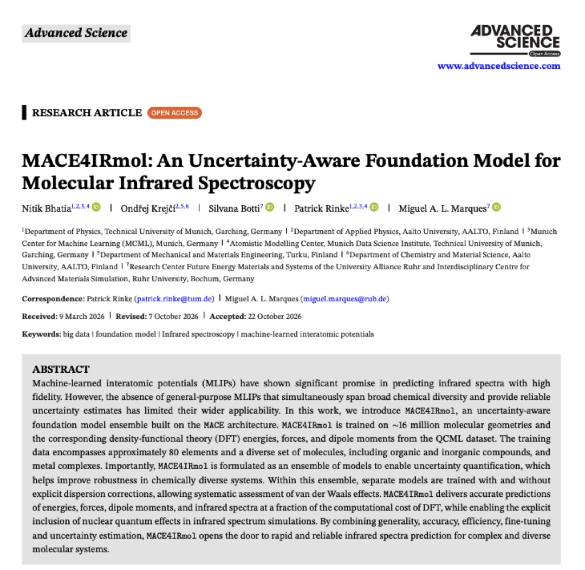